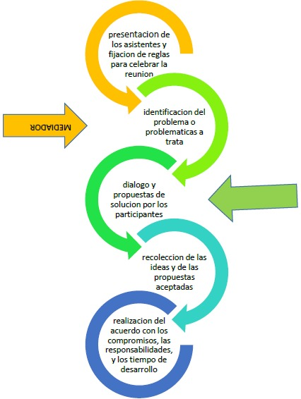

Talleres de Mediación
Taller 1 - Mediación y Entorno
Identificar problemáticas y formas de conflicto particular y comunitario.
Crear espacios de reflexión y diálogo para la resolución de conflictos.
Promover una cultura de paz y respeto hacia los demás.
“La Mediación Comunitaria se configura como un mecanismo a través del cual los conflictos de convivencia puedan tramitarse con fundamento en el consenso...”
Videos:
Cartel niños jugando Pelea en la calle Vecinos Se te ha caído Ruido1. Cual o cuales de las problemáticas observadas tienen un trasfondo individual
2. Cual o cuales de las problemáticas tienen un trasfondo comunitario
3. Cual o cuales problemáticas tienen un trasfondo económico
4. Crees que se afecta algún derecho ciudadano en las situaciones que se ponen de presente en los videos cuales
5. De acuerdo a las respuestas anteriores describe un problema o problemática que te afecte de manera individual o de forma comunitaria en tu barrio, o cuadra
Taller 2 - Estrategia Comunitaria
Actividad: Entendemos la mediación como forma de resolución
Objetivos:
- Entender los pasos de una mediación comunitaria.
- Aplicar los pasos de la mediación comunitaria.
- Analizar un caso práctico dentro de la comunidad o de un barrio que se considere se puede tratar por este medio.
Reflexión:
1. Mira el video y escucha atentamente las siguientes canciones:
Valiente es dialogar Canción a la empatía- ¿Crees que es más importante escuchar que hablar o es más importante escuchar?
- ¿Qué habilidades implica el escuchar al otro?
- ¿Por qué crees que se dice en la canción que es de valientes dialogar o hablar?
- ¿Qué habilidades implica dialogar con el otro?
- ¿Por qué crees que es más fácil hablar que enfrentarse a golpes o a través de la violencia?
2. Comenta en qué situaciones se debe dialogar en la casa o en el barrio según tu experiencia personal.
3. Observa la gráfica que está presente abajo; muestra los pasos básicos para proponer la mediación a un conflicto y llegar a acuerdos.
- ¿Cómo podrías actuar tú como mediador, para dar solución a una problemática concreta de tu localidad o del barrio?
- ¿Qué crees que podría contener un acuerdo de mediación comunitaria según la problemática tratada?
- Entre todos los participantes abordemos una problemática como ejercicio de mediación y apliquemos los pasos.
- Describe un poco las acciones que has hecho y que han contribuido para tratar o continuar el problema.
Observa el video y reflexiona:
Barrio La TrinidadInfografías

Mediación Vecinal: Reconoce el conflicto, dialoga con respeto, busca un mediador y acuerden soluciones. 🧍♂️🧍♀️ → 🤝
Derecho de Petición: Cualquier persona puede pedir información o soluciones a una entidad pública. Deben responder en máximo 15 días hábiles. 📝📬
Acción de Grupo: Permite que varias personas afectadas por un mismo problema se unan legalmente para exigir justicia. 👥⚖️🌍
Acción de Cumplimiento: Herramienta legal para exigir que una norma o ley existente se cumpla. ✅📃⚖️
“Nosotros los comunales hemos hecho barrio, hemos hecho cuadra y hemos hecho ciudad.”
— Guillermo Bastidas